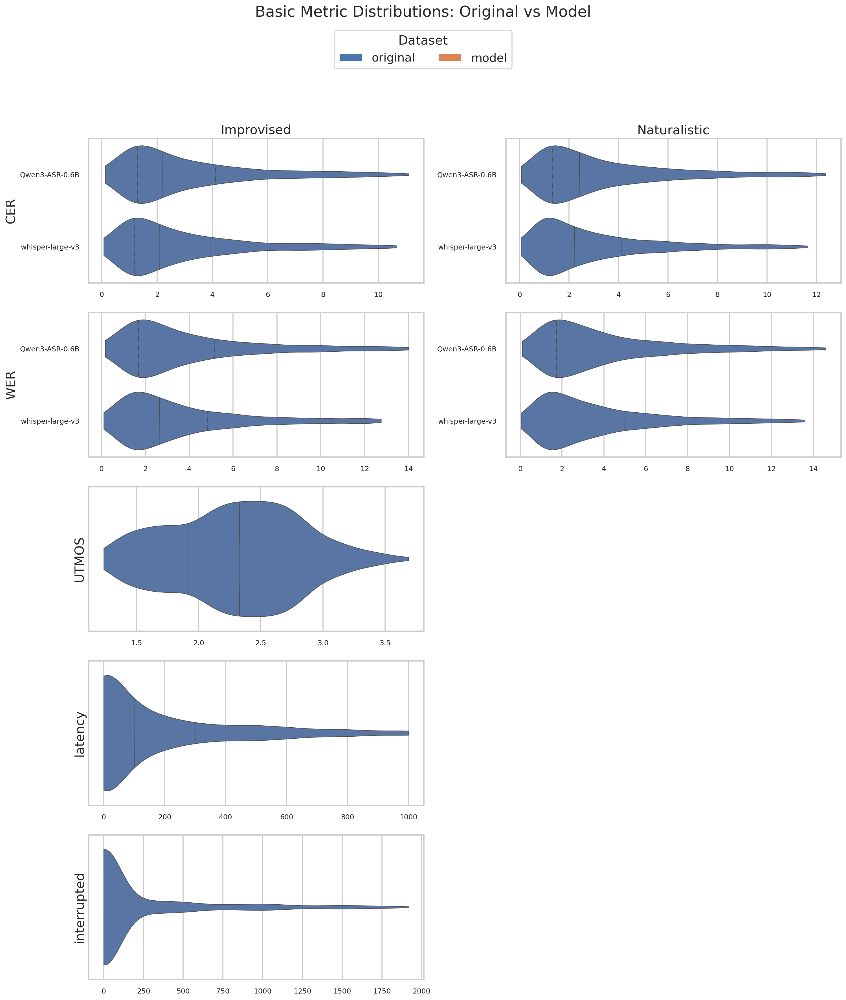
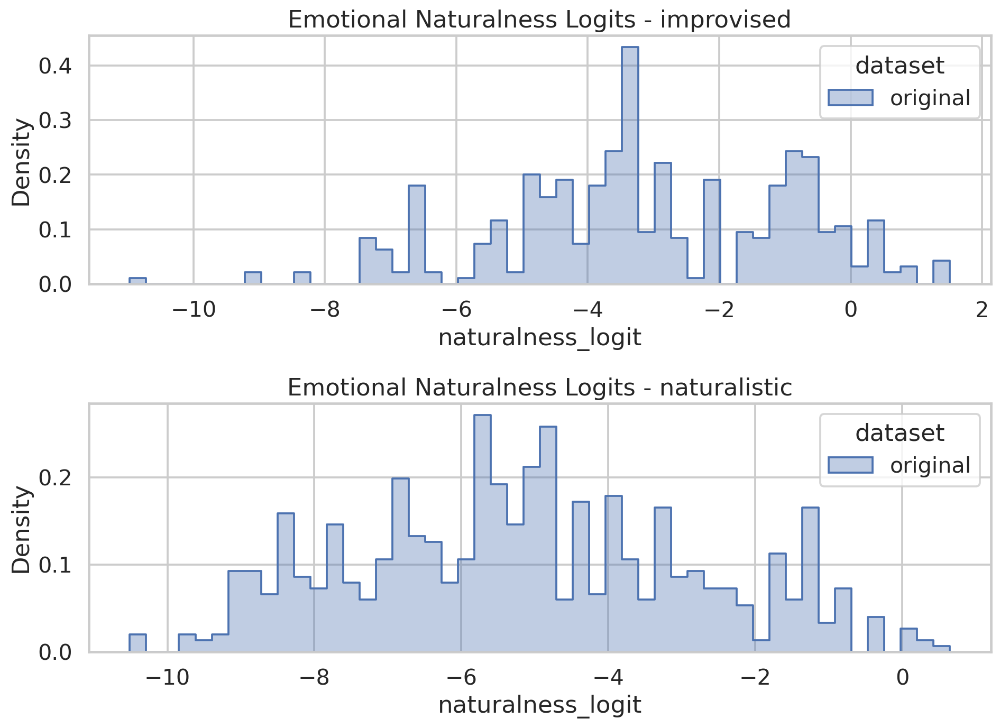
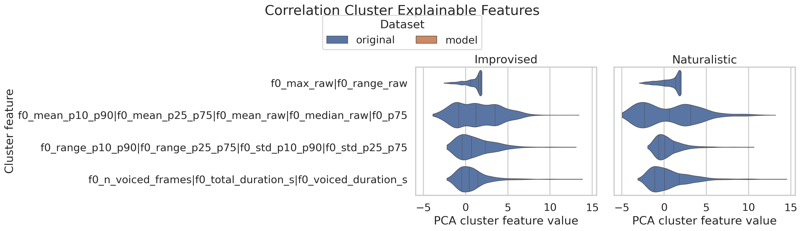
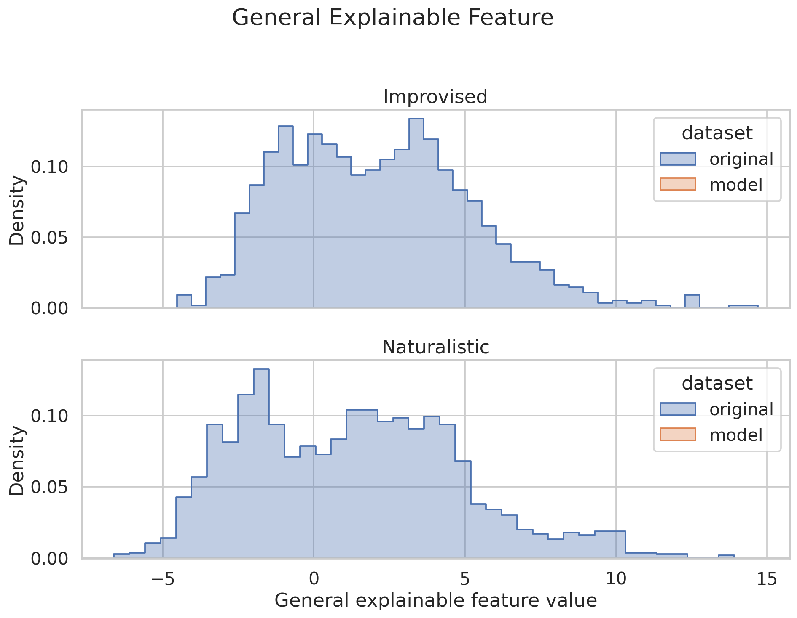

Executive Summary
This report combines the simplified text report, Stage 1 metric tables, and Stage 2 figures into a browsable HTML document.
Improvised
Language ID: English language detected in original answers (%): 98.1771%
Naturalistic
Language ID: English language detected in original answers (%): 97.6167%
Basic Metrics
Basic metrics come from script 10 and include ASR-specific CER/WER columns, UTMOS, latency, interruption counts, and interruption overlap duration when available. If original base metrics were not generated, the table reports model means and standard deviations.
No data available.

Basic metric histogram gallery


Language ID
Language ID reports the percentage of answer audio rows whose detected language is English (eng) in language_id.csv.
| subset | % Eng in models' answers | % Eng in original answers |
|---|---|---|
| improvised | <NA> | 98.177083 |
| naturalistic | <NA> | 97.616732 |
Dialect ID
Dialect ID reports the percentage of question and answer rows assigned to each VoxLect dialect class. The confusion matrix counts question-to-answer dialect changes; the box plot compares the full question and answer score vectors for each class.
| Subset | Question/Answer | East Asia | English | Germanic | Irish | North America | Northern Irish | Oceania | Other | Romance | Scottish | Semitic | Slavic | South African | Southeast Asia | South Asia | Welsh |
|---|---|---|---|---|---|---|---|---|---|---|---|---|---|---|---|---|---|
| improvised | Question | <NA> | <NA> | <NA> | <NA> | <NA> | <NA> | <NA> | <NA> | <NA> | <NA> | <NA> | <NA> | <NA> | <NA> | <NA> | <NA> |
| improvised | Answer | <NA> | <NA> | <NA> | <NA> | <NA> | <NA> | <NA> | <NA> | <NA> | <NA> | <NA> | <NA> | <NA> | <NA> | <NA> | <NA> |
| naturalistic | Question | <NA> | <NA> | <NA> | <NA> | <NA> | <NA> | <NA> | <NA> | <NA> | <NA> | <NA> | <NA> | <NA> | <NA> | <NA> | <NA> |
| naturalistic | Answer | <NA> | <NA> | <NA> | <NA> | <NA> | <NA> | <NA> | <NA> | <NA> | <NA> | <NA> | <NA> | <NA> | <NA> | <NA> | <NA> |
Missing graph: reports/seamless_2t_2s_questions/gpt-4o-audio-preview-2025-06-03/graphs/dialect_confusion.png
Missing graph: reports/seamless_2t_2s_questions/gpt-4o-audio-preview-2025-06-03/graphs/dialect_scores.png
Emotional Naturalness
Naturalness is summarized as the paired test-set logit difference between model and original utterances. Positive values mean higher model logits than original logits.
No data available.

STANCEs
STANCE metrics compare LLM and original scores for each STANCE question. Naturalistic STANCEs are omitted because they are not computed in this benchmark pipeline.
No data available.
Missing graph: reports/seamless_2t_2s_questions/gpt-4o-audio-preview-2025-06-03/graphs/stances.png
Explainable Features
Explainable feature rows report model-minus-original mean differences, p-values, and the Stage 41 classification AUROC/accuracy. Correlation-cluster rows come from script 41 PCA cluster features.
Correlation Cluster Features
No data available.


Improvised
Highest AUROC Features
No data available.
Lowest AUROC Features
No data available.
Naturalistic
Highest AUROC Features
No data available.
Lowest AUROC Features
No data available.
Missing graph: reports/seamless_2t_2s_questions/gpt-4o-audio-preview-2025-06-03/graphs/explainables.png
No per-feature graph directory found.